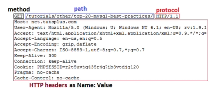
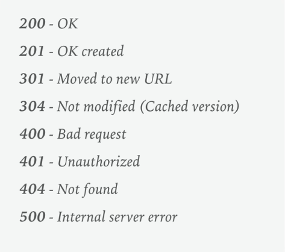
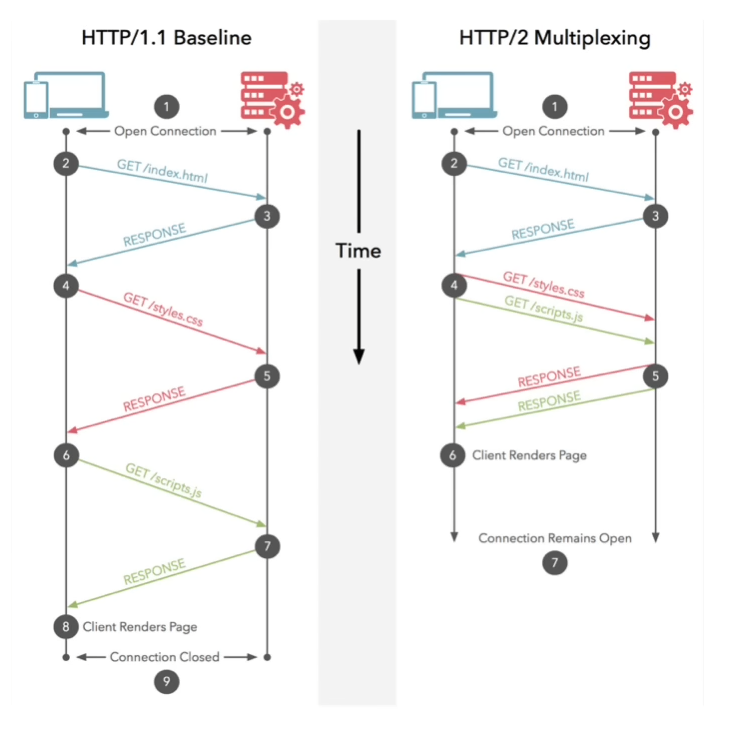

HTTP stands for HyperText Transfer Protocol.
It is an application-layer protocol that defines how messages are formatted and transmitted between a client (e.g. a web browser) and a server on the web.
HTTP is the foundation of data communication on the World Wide Web — every time you visit a website, your browser uses HTTP to ask the server for the page and the server uses HTTP to send it back.
HTTP Requests and Responses are the two main components of HTTP communication.
An HTTP Request is sent by the client to the server asking for a resource (e.g. a web page, image, or API data).
An HTTP Response is sent back by the server, containing either the requested resource or an error message if it could not be found or accessed.
HTTP over TCP/IP:
HTTP itself does not care how the data travels — it only defines the format and rules of messages. However, in practice, HTTP almost always runs on top of TCP/IP, which is responsible for reliably transmitting the raw bytes between machines.
Think of TCP/IP as the "road" and HTTP as the "language" written on signs along that road.
HTTP is Stateless:
Each HTTP request/response pair is completely independent — the server does not remember previous requests. This is called being stateless.
Why? Statelessness makes servers simpler and highly scalable, since they don't need to track every connected client.
The downside is that things like login sessions can't exist natively in HTTP. To work around this, developers use:
- Cookies: small pieces of data the server sends to the browser and the browser sends back on every request.
- Sessions: server-side storage identified by a session ID kept in a cookie.
- Local/Session Storage: browser-side key-value storage used by JavaScript.
- Tokens (e.g. JWT): signed tokens the client sends with each request to prove identity.
URL Anatomy:
A URL (Uniform Resource Locator) tells the browser exactly where to send the HTTP request.
Example: https://www.example.com:443/products?id=42#reviews
- Scheme: https — which protocol to use.
- Host: www.example.com — the server's domain name.
- Port: 443 — which port to connect to (80 is default for HTTP, 443 for HTTPS).
- Path: /products — the specific resource on the server.
- Query String: ?id=42 — extra parameters sent to the server.
- Fragment: #reviews — a location within the page (processed by the browser, never sent to the server).
HTTPS stands for HyperText Transfer Protocol Secure.
It is HTTP with an added encryption layer using TLS (Transport Layer Security, the modern successor to the older SSL standard).
Without HTTPS, all data — including passwords and credit card numbers — travels as plain text that anyone intercepting the connection can read.
With HTTPS, data is encrypted before being sent and only the intended recipient can decrypt it.
To enable HTTPS, the server must have a TLS certificate issued by a trusted Certificate Authority (CA) (e.g. Let's Encrypt, DigiCert).
When your browser connects to an HTTPS site, it performs a TLS handshake — exchanging keys and verifying the certificate — before any HTTP data is sent.
Look for the padlock icon in the browser address bar as a sign of an active HTTPS connection.
HTTP Methods:
HTTP methods (also called "verbs") tell the server what action to perform on a resource.
GET — Retrieve a resource. The most common method. Data is in the URL (query string), not the body. Should never modify data on the server.
POST — Send data to create a new resource. Data is in the request body. Submitting a form or uploading a file typically uses POST.
PUT — Replace an entire existing resource with the data in the request body. It is idempotent — sending the same request 10 times has the same result as sending it once.
PATCH — Partially update an existing resource. Unlike PUT which replaces the whole thing, PATCH only changes the fields you send. (e.g. updating just a user's email without touching other fields.)
DELETE — Remove a resource from the server. Also idempotent — deleting something that is already gone produces the same end state.
HEAD — Like GET, but the server only returns the response headers, not the body. Useful for checking if a resource exists or checking its size before downloading.
OPTIONS — Ask the server what methods and headers it supports for a resource. Browsers automatically send an OPTIONS "preflight" request before cross-origin requests (CORS).
HTTP Header Fields:
Headers are key-value pairs sent with every request and response. They carry metadata — information about the message itself rather than the content.

General (describe the transaction):
- Request URL: The full URL of the resource being requested.
- Request Method: The HTTP method used (GET, POST, etc.).
- Status Code: The outcome of the request (e.g. 200 OK, 404 Not Found).
- Remote Address: The IP address and port of the server.
- Referrer-Policy: Controls how much of the referring URL is shared when the user follows a link (e.g. strict-origin-when-cross-origin).
Response Headers (server → client):
- Server: The name/version of the server software (e.g. nginx/1.24).
- Content-Type: The format of the response body (e.g. text/html; charset=utf-8, application/json). The browser uses this to decide how to render the data.
- Content-Length: The size of the response body in bytes.
- Set-Cookie: Instructs the browser to store a cookie and send it back on future requests.
- Cache-Control: Tells the browser/proxy how long to cache the response (see Caching section below).
- Date: The timestamp when the response was generated.
Request Headers (client → server):
- Cookie: Cookies previously set by the server, sent back automatically with each request.
- Accept: Content types the client can handle (e.g. text/html, application/json).
- Accept-Language: Preferred languages (e.g. en-US, en;q=0.9).
- Accept-Encoding: Compression formats the client supports (e.g. gzip, deflate, br).
- Content-Type: The format of the request body (e.g. application/json when sending JSON to an API).
- Content-Length: The size of the request body in bytes.
- Authorization: Credentials to authenticate the client. Common formats:
- Basic base64(username:password)
- Bearer <JWT token>
- User-Agent: Identifies the client software (e.g. Mozilla/5.0 ... Chrome/124.0). Servers may use this to serve different content to mobile vs desktop.
- Referer: The URL of the page the user was on before making this request. Note: "Referer" is a historical misspelling of "Referrer" baked into the standard.
- Origin: Used in CORS — tells the server which domain the request came from.
HTTP Status Codes:

Status codes are three-digit numbers the server includes in every response to tell the client what happened.
1xx — Informational: The request was received; keep going.
- 100 Continue — Server received the request headers; client should send the body.
- 101 Switching Protocols — Server is switching to a different protocol (e.g. upgrading to WebSocket).
2xx — Success: The request was understood and fulfilled.
- 200 OK — Standard success response.
- 201 Created — A new resource was successfully created (common after POST).
- 204 No Content — Success, but there is nothing to return (common after DELETE).
3xx — Redirection: The client needs to take further action (usually follow a different URL).
- 301 Moved Permanently — Resource has a new permanent URL; update your bookmarks.
- 302 Found — Temporary redirect; keep using the original URL next time.
- 304 Not Modified — Cached version is still valid; no need to re-download the resource.
4xx — Client Error: The request was wrong — it's the client's fault.
- 400 Bad Request — Malformed syntax or invalid parameters.
- 401 Unauthorized — Authentication required (you need to log in).
- 403 Forbidden — Authenticated but not allowed (you don't have permission).
- 404 Not Found — Resource does not exist at this URL.
- 405 Method Not Allowed — The resource exists but doesn't support this method (e.g. trying to DELETE a read-only endpoint).
- 429 Too Many Requests — The client is being rate-limited.
5xx — Server Error: The request was fine, but the server failed to fulfil it.
- 500 Internal Server Error — Generic server-side crash.
- 502 Bad Gateway — The server acting as a proxy received a bad response from an upstream server.
- 503 Service Unavailable — Server is down or overloaded; try again later.
- 504 Gateway Timeout — Upstream server took too long to respond.
HTTP Caching:
Caching allows browsers and proxy servers to store copies of responses so they don't need to be re-fetched every time, speeding up the web and reducing server load.
Key headers involved:
- Cache-Control: max-age=3600 tells the browser to reuse the cached response for 3600 seconds. no-cache means always revalidate. no-store means never cache (e.g. sensitive banking pages).
- ETag: A "fingerprint" (hash) of the resource. The browser sends it back in If-None-Match; if unchanged, the server replies 304 Not Modified — saving bandwidth.
- Last-Modified / If-Modified-Since: Same idea but using a timestamp instead of a hash.
CORS (Cross-Origin Resource Sharing):
Browsers enforce a Same-Origin Policy — JavaScript on siteA.com cannot normally make requests to siteB.com to protect users from malicious scripts.
CORS is the controlled mechanism that lets servers opt in to allowing cross-origin requests.
The server uses the Access-Control-Allow-Origin response header to say which origins are permitted (e.g. * for anyone, or https://myapp.com for one specific site).
For non-simple requests (e.g. PUT with JSON), the browser first sends an OPTIONS preflight request to check permissions before sending the real request.
HTTP/2:

HTTP/2 (released 2015) is a major revision designed to solve performance problems with HTTP/1.1.
Key improvements over HTTP/1.1:
- Multiplexing: Multiple requests and responses can travel simultaneously over a single connection. In HTTP/1.1, browsers had to open 6–8 parallel connections and could only send one request per connection at a time, causing a "head-of-line blocking" problem.
- Header Compression (HPACK): HTTP/1.1 sends headers as plain text on every request. HTTP/2 compresses them, which is significant because headers can be large (cookies, user-agent strings) and are mostly repetitive across requests.
- Server Push: The server can proactively send resources (like CSS or JavaScript files) to the client before the client even asks for them, reducing round-trips.
- Binary Protocol: HTTP/1.1 is text-based (human-readable). HTTP/2 uses binary framing, which is more efficient to parse and less error-prone.
HTTP/3:
HTTP/3 (standardised 2022) replaces TCP with a new protocol called QUIC, built on UDP.
Why? TCP has a fundamental "head-of-line blocking" issue at the transport layer — if one packet is lost, the entire connection stalls until it is retransmitted, even for unrelated data streams. With HTTP/2 multiplexing, one lost packet blocks all streams simultaneously.
QUIC solves this by making each stream independent at the transport level, so a lost packet only delays its own stream.
Other QUIC benefits:
- Faster connection setup: QUIC combines the TCP handshake and TLS handshake into one, reducing connection time from ~2 round trips to 1 (or 0 for known servers).
- Connection migration: A QUIC connection can survive a change in IP address (e.g. moving from Wi-Fi to mobile data) without reconnecting.
HTTP/3 is now used by major sites including Google and Cloudflare.